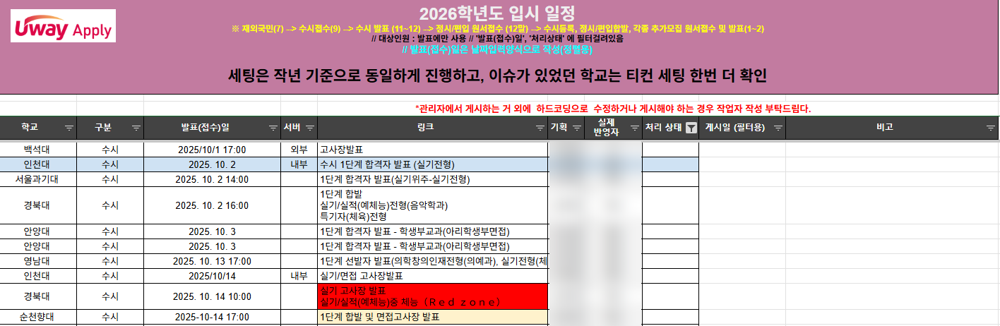
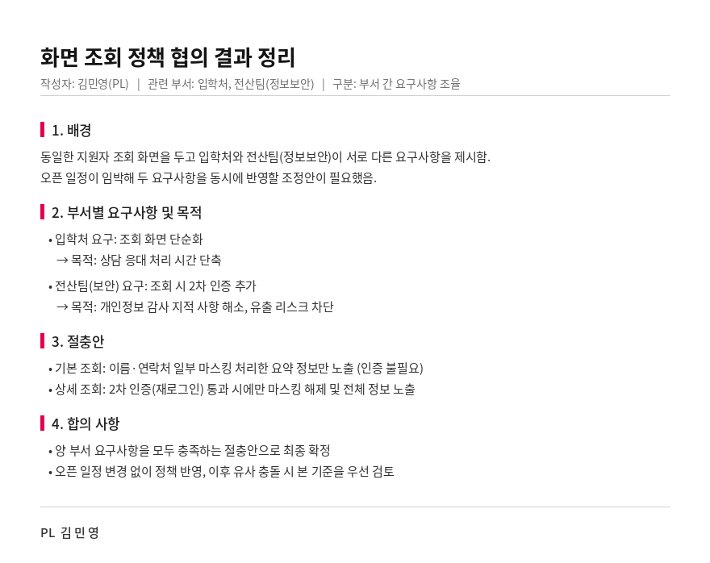

화면 너머의 데이터와 상태를 설계하는 기획자,
기준은 제가 세우고, AI로 더 빠르게 검증합니다
요구사항 정의부터 정책·화면설계, 배포 리스크 관리까지 — 40여 개 대학 입시 서비스를 직접 운영하며 쌓은 5가지 장면을 소개합니다.
무장애 운영
운영 시간 단축
장애·배포 사고
상태 하나 바뀔 때마다
슬라이드를 복제하던 설계서
로그인 5회 실패 잠금, 휴면계정, 승인대기, 비밀번호 변경 안내처럼 예외 상태가 늘어날수록 같은 화면을 슬라이드로 계속 복제해야 했고, 결과물은 클릭해볼 수 없는 정적 이미지였습니다.
- 상태 변화마다 슬라이드 복제
- 클릭 불가한 정적 이미지로만 흐름 전달
상태가 많은 화면은, PPT 대신
클릭되는 프로토타입으로
전체 화면설계는 기존 방식으로 작성하고, 로그인·계정 상태처럼 예외가 많은 화면은 요구사항·정책·상태값·예외처리를 스크립트로 정리해 AI로 브라우저에서 바로 클릭해볼 수 있는 프로토타입을 만들었습니다.
데모 아이디 locked · dormant · pending 으로 로그인해보세요.
배너 하나 바꾸는데
코드를 직접 손대야 함
순천향대학교 입학처는 배너 전용 관리 도구가 없어, 팝업 관리 시스템을 우회로 활용하고 있었습니다. 색상 하나 바꾸려 해도 HTML 태그를 직접 입력해야 했고, 등록 순서를 바꿀 방법도 미리보기도 없었습니다.
- 제목·색상 표현마다 HTML 태그 직접 입력
- 노출 순서 변경 기능 없음
- 등록 후에야 결과 확인(미리보기 없음)
운영 데이터를 근거로,
전용 CMS를 직접 제안
기존 도구를 우회 활용하며 쌓인 운영 비효율을 데이터로 근거를 만들어 클라이언트에게 컨설팅하고, 직접 AS-IS/TO-BE 비교표와 상세 화면설계를 작성해 개발 요청까지 진행했습니다.
운영 시간
75% 단축
컬러 에디터·순서 관리·실시간 미리보기를 갖춘 배너 전용 CMS로, 코드 없이도 운영이 가능한 구조를 만들었습니다.
90여 개 대학이
동시에 발표하는데 기준이 없음
대입 합격자 발표 시스템 운영 및 배포 최적화 · 2023.02 – 2025.10 · PL
대학마다 발표 일정이 제각각이라 트래픽 변동성과 장애 리스크가 컸고, 발표 유형이 표준화되지 않으면 데이터 노출 오류 위험도 있었습니다. 사용자 관점(GA4)과 서버 관점(T-con) 데이터를 각각 다른 도구로 봐야 해 통합 판단도 어려웠습니다.
- 90여 개 대학의 상이한 발표 일정 → 트래픽 변동성·장애 리스크
- 발표 유형 미표준화 시 데이터 노출 오류 위험
- 발표 피크 타임 서버 과부하·DB 교착(Lock) 우려
일정을 표준화하고,
이중 방어 체계를 설계
발표 전에는 운영 시트로 배포 리스크를 사전 차단하고, 발표 당일에는 사용자·서버 데이터를 하나의 타임라인에서 교차 판단하는 구조를 직접 설계했습니다.

긴급 요청이 오면
리스크부터 설명하고 조율
Red Zone과 겹치는 긴급 반영 요청이 들어오면, 거절하지 않되 왜 지금은 위험한지부터 투명하게 공유하고 대체 일정을 먼저 제시해 메일로 협의했습니다.
발표 당일에는
실시간 트래픽 모니터링
도메인별 접속 상태를 실시간으로 확인하며, GA4(유입)·T-con(서버 커넥션) 데이터를 하나의 타임라인에서 교차 확인해 80% 도달 시 선제 조치 3종을 실행했습니다.
- 정적 리소스 캐싱 강화
- 불필요한 스크립트 일시 차단
- DB 쿼리 모니터링 강화
입시 집중기간
배포 사고율 0%
표준화된 세팅과 이중 방어 체계로, 8월부터 익년 2월까지 이어지는 입시 집중기간 내내 서비스 가용성을 유지했습니다.
오픈 직전,
상반된 두 요구 충돌
같은 화면을 두고 입학처(현업)는 "더 단순하게", 전산팀(보안)은 "인증을 더 강화하게"를 동시에 요구했습니다. 오픈은 임박했는데 두 부서 요구는 정면으로 충돌했습니다.
진짜 목적을 파악하고,
절충안으로 중재
"단순화"와 "보안 강화"라는 표면적 요구 뒤에 있는 진짜 목적을 각각 확인하고, 두 목적을 동시에 만족하는 절충안을 설계해 양쪽에 제시했습니다.
처리 시간 단축
유출 리스크 차단
절충안을 합의 문서로 정리해 공유
양측이 각자 해석하지 않도록, 배경·부서별 요구사항·절충안·합의 사항을 한 장으로 정리해 두 부서가 함께 확인하고 서명하는 방식으로 조율을 마무리했습니다.

양쪽을 설득하고,
조율 기준으로 표준화
두 부서 모두 절충안을 수용해 오픈 일정 그대로 반영을 완료했습니다. 이후 부서 간 요구가 충돌하면 이 절충 기준을 먼저 검토하는 방식으로 자리잡았습니다.
화면만 그리지 않고,
정책과 예외까지 문서에 담습니다
개발자가 구현하다 멈춰서 되묻지 않도록, 화면과 함께 상태 전이 · 검증 규칙 · 예외 처리를 정의합니다. 오른쪽은 실제 작성한 문서에서 발췌한 내용입니다.
로그인 5회 실패 시 계정 비활성화, 3개월 주기 비밀번호 변경 안내
학과 선택 직후 + 최종 신청 시 2회 검증, 기간 외 취소 버튼 자동 비활성화
실제로 작성한 산출물로
증명하는 문서 밀도
화면설계뿐 아니라 메뉴구조도(IA), 정책 문서까지 — 기획 단계별로 실제 작성한 문서의 구조와 밀도를 확인할 수 있습니다.
고객사 기밀 보호를 위해 세부 텍스트는 모자이크 처리했습니다.
기획은 화면이 아니라,
그 뒤의 데이터와 상태를 설계하는 일입니다
AI는 그 설계를 더 빠르게 검증하고 전달하는 도구일 뿐, 기준을 세우는 건 여전히 기획자의 몫이라고 생각합니다.